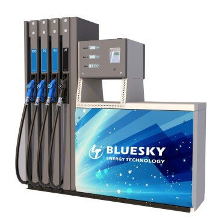

ТРК BlueSky RT-C482 Z всасывающая
Артикул: 0796
Bluesky Energy Technology Wenzhou Co., Ltd
Раздел: Всасывающие ТРК · АЗС
| Количество видов топлива | 4 |
| Количество рукавов | 8 |
| Количество сторон индикации | 2 |
| Скорость выдачи топлива | 40 |
| Тип гидравлики | Всасывающая |
Цена и наличие — по запросу. Поставляем оригинал и аналоги. Доставка по России.
Модификации и размеры (4)
- ТРК BlueSky RT-C482 Z всасывающая · арт. 0796
- ТРК BlueSky RT-C242 Z всасывающая · арт. 0833
- ТРК BlueSky RT-C362 Z всасывающая · арт. 0837
- ТРК BlueSky RT-C222 Z всасывающая · арт. 0838
Подберём нужный вариант — уточните при запросе.
Описание
ТРК BlueSky RT-C482 Z всасывающая производства Bluesky Energy Technology Wenzhou Co., Ltd — позиция из раздела «Всасывающие ТРК» для АЗС. Компания SYNDICAT поставляет оборудование и комплектующие для автозаправочных и газозаправочных станций по всей России. Цена и наличие «ТРК BlueSky RT-C482 Z всасывающая» — по запросу: оставьте заявку или позвоните, подберём оригинал или аналог и рассчитаем доставку.